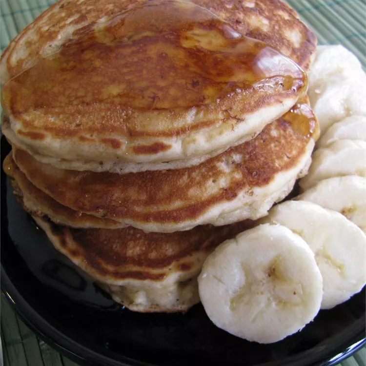

Peanut Butter Banana Pancakes

Description
I (the person who made it, not me lol) have a peanut butter pancake recipe that I modify from time to time. This one tastes fantastic with warm maple or strawberry syrup. I freeze leftover pancakes and reheat them in the toaster, spreading them with strawberry or raspberry jam. Yum!
Ingredients
- 1 ½ cups all-purpose flour
- 2 tablespoons baking powder
- 1 tablespoon white sugar
- ½ teaspoon salt
- 1 ¼ cups milk
- 1 ripe banana, mashed
- ⅓ cup smooth peanut butter
- 1 large egg
- 1 tablespoon canola oil
- 1 teaspoon vanilla extract
Steps
- Preheat a griddle over medium heat
- Whisk together flour, baking powder, sugar, and salt in a large bowl. Combine milk, mashed banana, peanut butter, egg, oil, and vanilla in a separate bowl; pour into flour mixture and whisk until batter is thoroughly mixed.
- Ladle batter in 1/4 cup portions onto the preheated griddle and cook until tiny air bubbles form on the top, 2 to 5 minutes; flip and continue cooking until the bottoms are browned, 2 to 3 minutes. Remove pancakes to a plate and cover to keep warm. Repeat with remaining batter.
I MADE IT
Return to Homepage